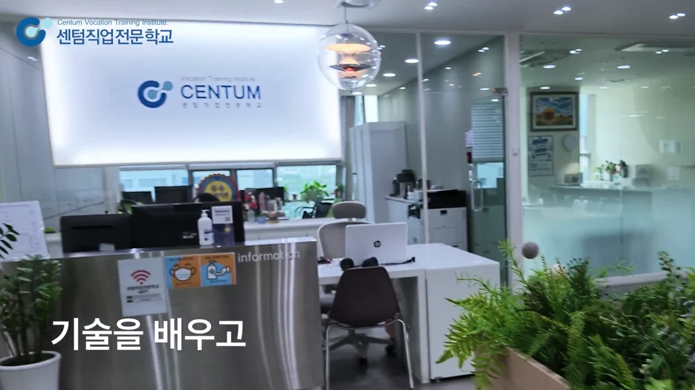
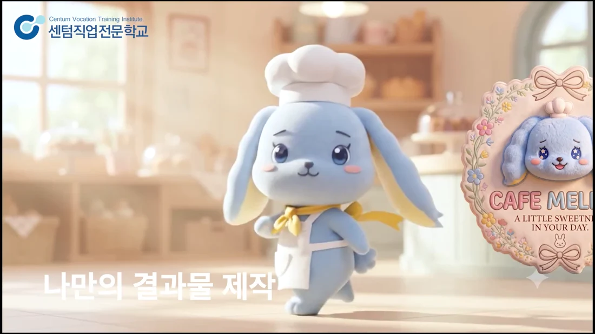
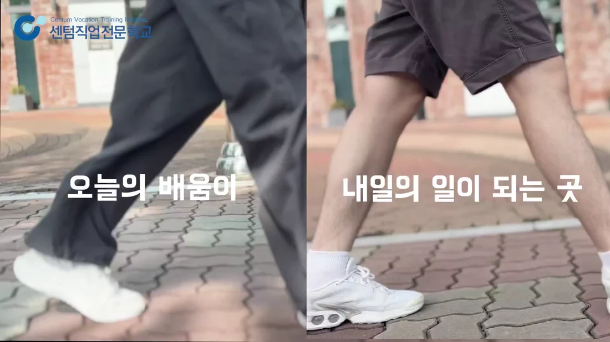
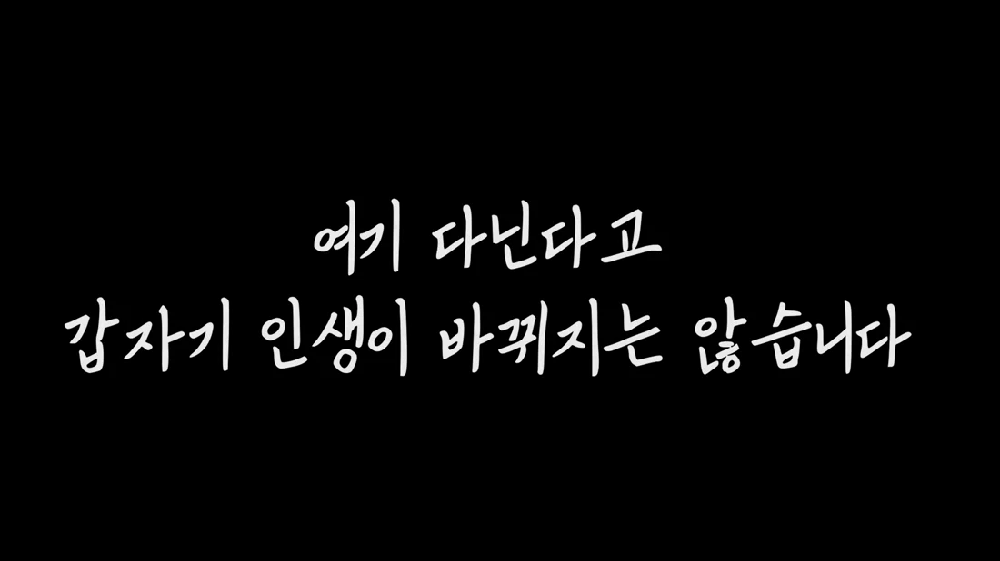
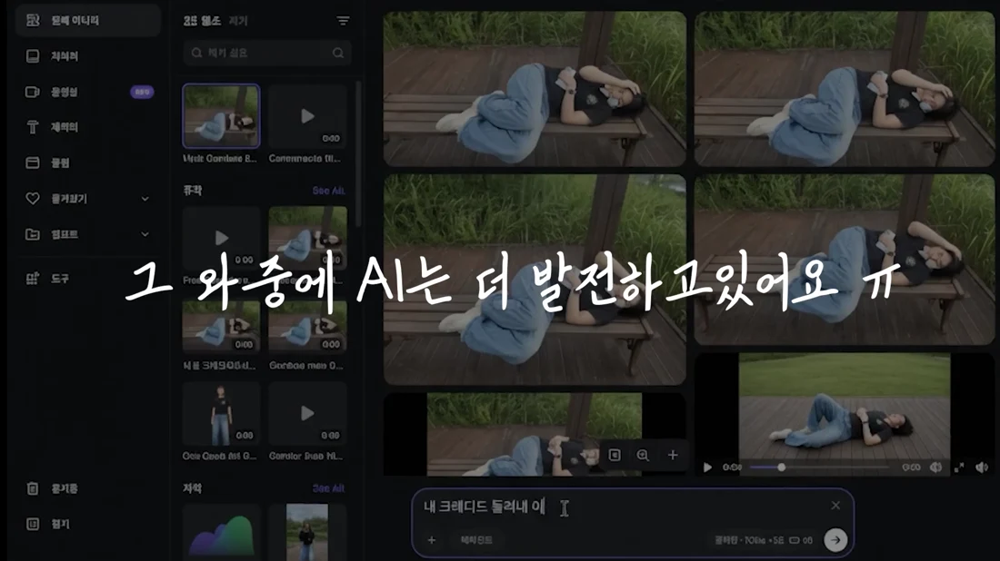
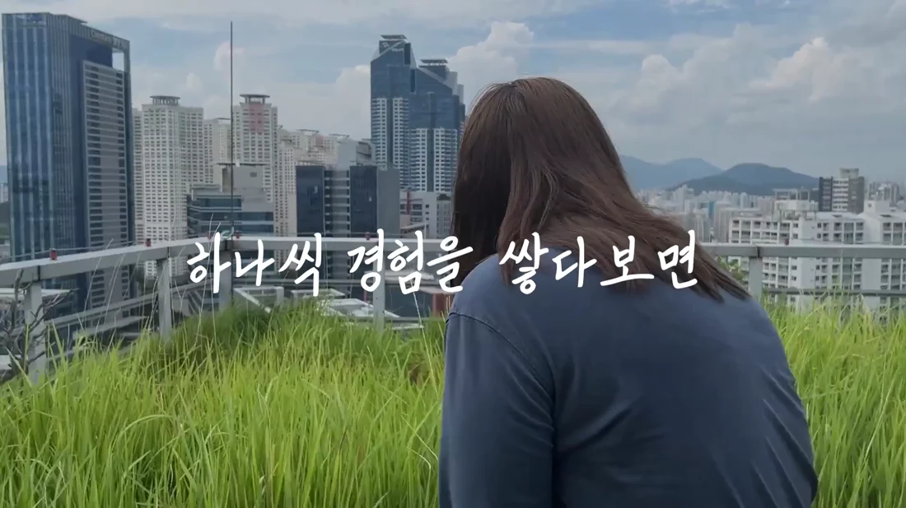

STORY
홍보에서 고백으로, 고백에서 권유로

외관과 시설을 먼저 보여줘 구직자가 어디에서 배우게 되는지 구체적으로 그릴 수 있게 했습니다.

강의 장면 다음에 수강생 작품을 배치해 실무교육으로 어떤 결과를 만들어볼 수 있는지 보여줍니다.

두 발걸음을 나란히 놓고 「오늘의 배움이 내일의 일이 되는 곳」이라는 문구로 정석 광고의 흐름을 마무리합니다.

밝은 광고의 리듬을 끊고 검은 화면과 손글씨 자막으로 전환합니다. 이때부터 실제 학습자의 고민이 이어집니다.

AI 작업 화면과 자막을 붙여, 새로운 도구가 빠르게 바뀌는 상황에서 느낀 막막함을 보여줍니다.

막막함에서 다시 경험을 쌓자는 제안으로 옮겨갑니다. 학습자가 지금 할 수 있는 일에 초점을 맞췄습니다.